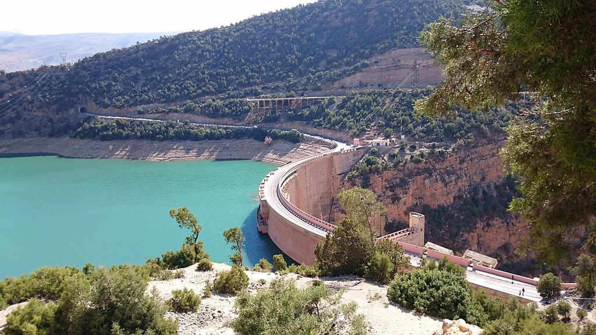

Projets existant

Découvrez les projets phares au Maroc qui visent à développer les énergies renouvelables pour un avenir plus durable.
Projet Noor Ouarzazate:
Le complexe solaire Noor Ouarzazate est l'un des plus grands projets solaires au monde et représente une avancée majeure dans la transition énergétique du Maroc. Ce projet est une composante clé du plan marocain pour le développement des énergies renouvelables et l'indépendance énergétique, et il a attiré une attention internationale en raison de son envergure et de sa technologie de pointe. En plus Noor Ouarzazate se distingue par l’utilisation de la technologie CSP (Concentrated Solar Power), qui permet de stocker l’énergie sous forme de chaleur pour la transformer en électricité à la demande, même lorsque le soleil ne brille pas. Ce type de technologie améliore la fiabilité de l'énergie solaire en comblant les périodes d'absence de soleil, ce qui permet au Maroc d’assurer une production d'énergie plus stable.
Objectifs du Projet Noor Ouarzazate
Réduction de la dépendance aux énergies fossiles : Noor Ouarzazate est au cœur du plan marocain de transition énergétique, visant à réduire la dépendance du pays aux importations d’énergies fossiles.
Réduction des émissions de CO₂ : Environ 760 000 tonnes de CO₂ sont évitées chaque année grâce à ce projet.
Objectif d'énergies renouvelables : Noor contribue à l’objectif du Maroc de porter la part des énergies renouvelables à 52 % du mix énergétique d'ici 2030.
Impact Économique et social
Création d'emplois : Le projet a généré des milliers d’emplois directs et indirects dans la région, notamment durant la phase de construction.
Développement régional : Il a stimulé l’économie de la région d'Ouarzazate en attirant des investissements et en développant les infrastructures locales.
Formation et expertise : Les équipes locales ont bénéficié de formations et d'acquisition de compétences techniques dans le domaine des énergies renouvelables.
Parc Éolien de Tarfaya

Ssitué sur la côte Atlantique près de la ville de Tarfaya dans le sud du Maroc, est l'un des plus grands parcs éoliens terrestres en Afrique. Mis en service en 2014, ce projet représente une avancée majeure dans la stratégie marocaine de développement des énergies renouvelables, visant à réduire la dépendance aux combustibles fossiles.
Objectifs du Parc Éolien de Tarfaya
Augmenter la part des énergies renouvelables : En ajoutant 301 MW au réseau, il contribue aux objectifs du Maroc d'atteindre 52 % d'énergie renouvelable dans le mix énergétique d'ici 2030.
Réduction des émissions de CO₂ : Le parc permet d’éviter environ 900 000 tonnes d’émissions de CO₂ par an, contribuant à la lutte contre le changement climatique.
Renforcer la sécurité énergétique : En diversifiant les sources d'énergie, le parc renforce l’indépendance énergétique du Maroc face aux fluctuations des prix des combustibles fossiles.
Impact environnemental, économique et social
Le parc réduit les émissions de gaz à effet de serre et limite la pollution, participant activement aux efforts marocains en matière de durabilité.
Il crée des emplois locaux pendant la phase de construction et pour la maintenance à long terme, stimulant ainsi l'économie de la région.
L’infrastructure renforce la stabilité et la fiabilité de l’approvisionnement en électricité dans le sud du Maroc, favorisant le développement socio-économique de la région.
Barrage de Bin el Ouidane

Le barrage de Bin el Ouidane est un important ouvrage hydraulique situé dans la région de Béni Mellal-Khénifra, au centre du Maroc. Construit entre 1949 et 1953, ce barrage est érigé sur l’oued El Abid, un affluent de l’Oum Errabiaa, et se trouve à environ 28 km de la ville d'Azilal.
Objectifs du Barrage de Bin el Ouidane
Production d’électricité : Il abrite une centrale hydroélectrique qui permet de générer de l’électricité, répondant à une partie des besoins énergétiques de la région.
Irrigation agricole : L’eau retenue est utilisée pour l’irrigation de vastes plaines agricoles dans la région de Tadla, soutenant ainsi l'agriculture locale.
Régulation des crues : Le barrage permet de contrôler le débit de l’Oued El Abid, réduisant ainsi les risques d'inondations dans les zones en aval.
Impact économique et énergétique
En agriculture : En fournissant une irrigation fiable aux plaines de Tadla.
Production d’électricité : La centrale hydroélectrique du barrage permet de générer une énergie propre qui alimente les zones environnantes.
Développement des énergies renouvelables : Le barrage s'inscrit dans la stratégie énergétique nationale visant à augmenter la part des énergies renouvelables dans le mix énergétique marocain. La production d'hydroélectricité aide le Maroc à réduire ses émissions de CO₂ en diminuant l'utilisation des combustibles fossiles.
Projet solaire de Midelt

Le projet solaire hybride de Midelt situé dans la région de Drâa-Tafilalet au centre du Maroc, est un projet phare de l’énergie solaire du Royaume. Faisant partie intégrante de la stratégie énergétique marocaine pour renforcer la production d'énergies renouvelables, combine les technologies solaire thermique et photovoltaïque pour produire de l'énergie renouvelable de manière efficace et fiable.
Objectifs de Projet solaire de Midelt
Augmenter la capacité de production d'énergie renouvelable : Avec une capacité projetée de 800 MW pour Midelt I, ce projet contribue de manière significative aux objectifs du Maroc de porter la part des énergies renouvelables dans le mix énergétique national à 52 % d'ici 2030.
Réduction des émissions de gaz à effet de serre : Le projet permettra de diminuer la dépendance du Maroc aux énergies fossiles importées, contribuant ainsi à réduire les émissions de CO₂.
Développement économique et emploi : Le projet crée des opportunités d'emploi, surtout dans la phase de construction, et favorise le développement économique de la région de Midelt.
Impacts de Projet solaire de Midelt
1. Énergie propre et durable : Avec une capacité de 800 MW (Midelt I), il renforce la part des énergies renouvelables dans le mix énergétique du Maroc, contribuant à atteindre les objectifs de 52 % d’énergies renouvelables d'ici 2030.
Développement économique et emploi : La construction et la gestion du complexe créent des emplois locaux, soutenant l'économie de la région de Midelt.
Innovation technologique : Le projet combine le photovoltaïque et le solaire à concentration (CSP), assurant une production continue même sans soleil, ce qui renforce la stabilité du réseau électrique marocain.